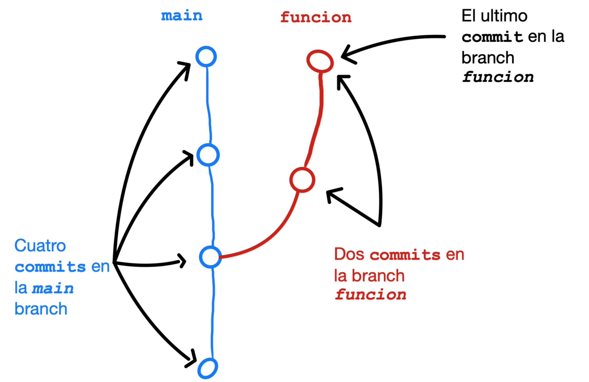
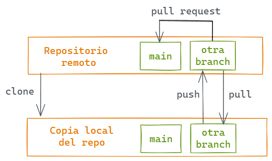
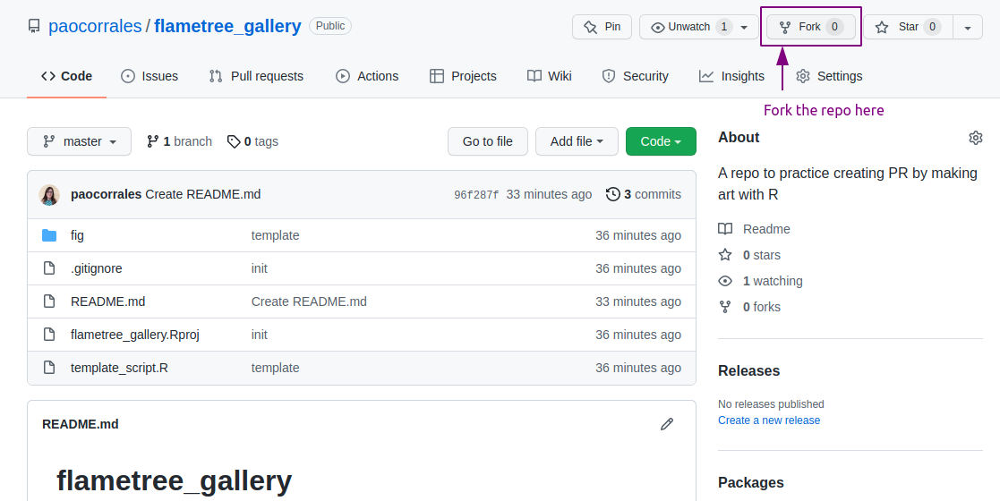
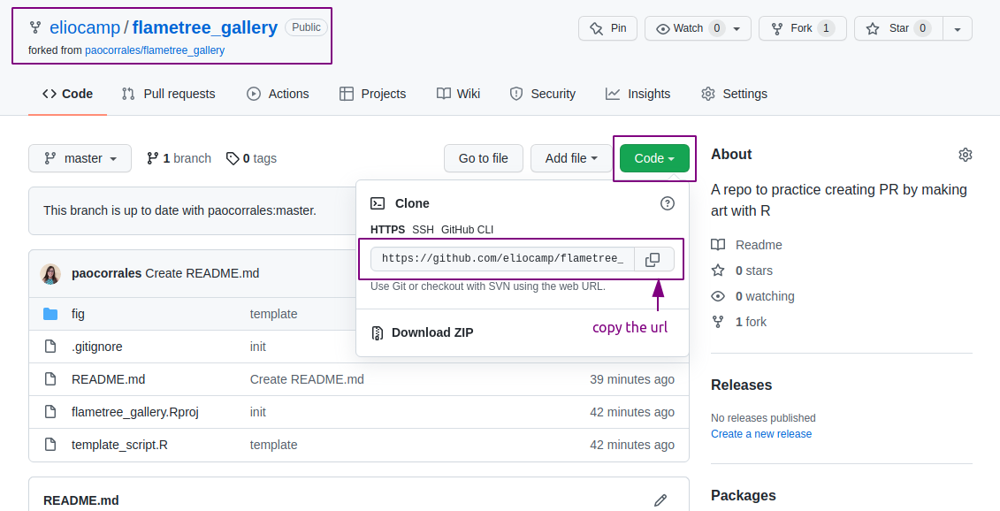
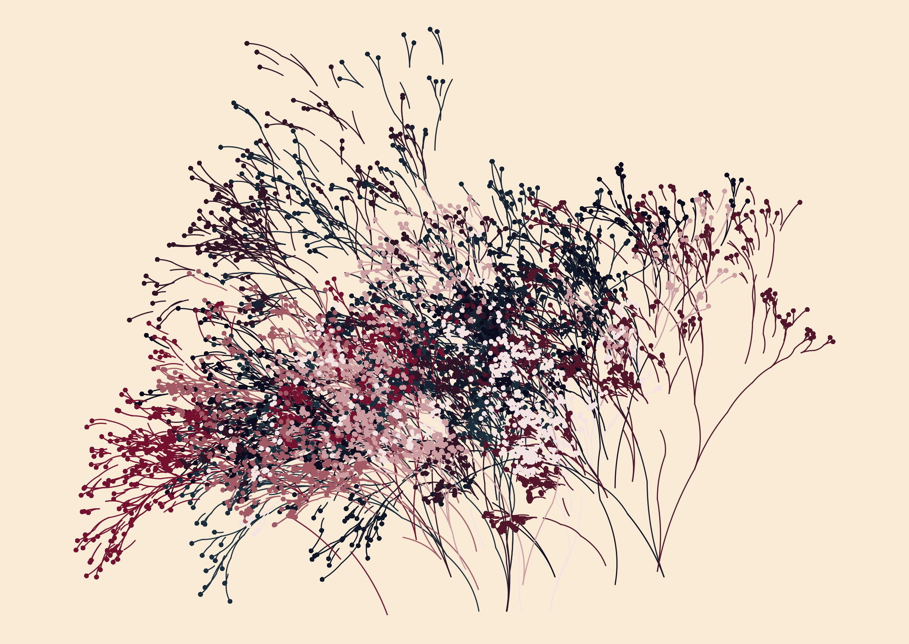
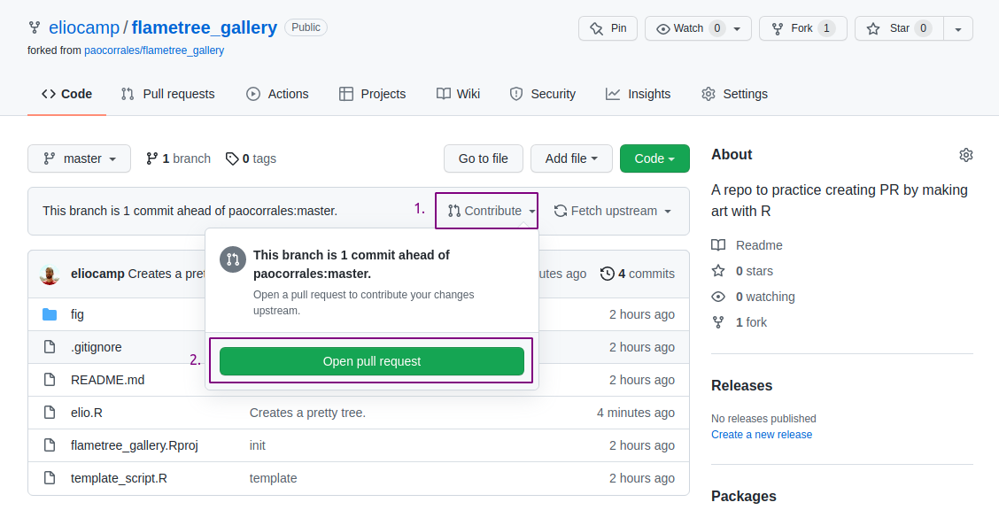
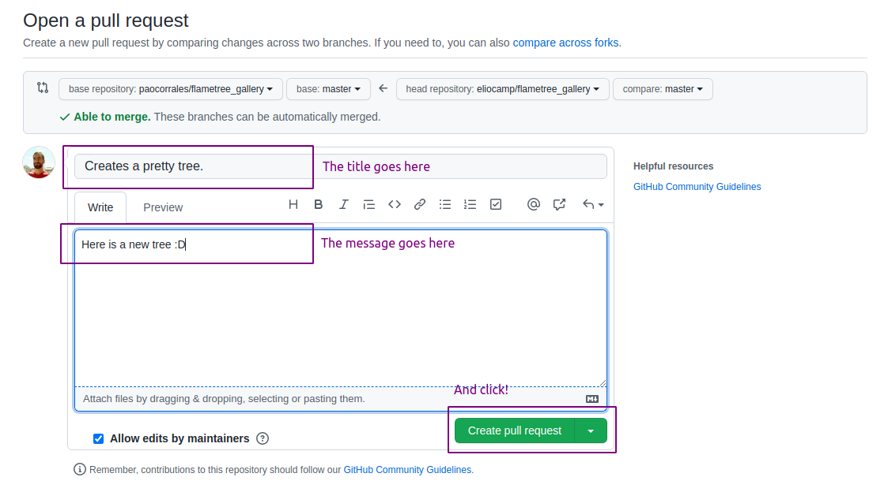

Git para trabajar en equipo
Objetivos de aprendizaje
- Aplicar conceptos de flujos de trabajo usando Git básicos al trabajo colaborativo utilizando GitHub.
- Comprender como los conflictos de versiones se generan y como resolverlos.
- Identificar las diferencias entre branchs y forks e identificar situaciones en las que utilizar cada una.
- Comprender el uso y el rol de las branchs y los pull requests en la colaboración en un proyecto.
- Gestiona pull requests como responsable o líder de un proyecto.
Flujo de trabajo individual
En este capítulo vamos a ver que pinta tiene el flujo de trabajo colaborativo entre personas para hacer análisis de datos y desarrollo de software. Previamente estuviste trabajando con git de manera individual:
Modificar un archivo --> Add --> Commit --> PushAsí que cada vez hagas un push, git comparará los archivos en el repositorio remoto con la versión que actualizaste localmente y actualizará el repo remoto para que todo este sincronizado. Pero cuando se trabaja con otras personas hay casos que potencialmente pueden crear conflictos de merge o versiones. Aunque el nombre sugiera lo contrario, un conflicto de merge no es necesariamente un error, ocurre cuando la versión de un archivo en el repositorio local no es compatible con su versión en el repositorio remoto. A veces, Git es capaz de combinar los dos conjuntos de cambios sin ningún problema. Pero a veces esto no es posible, y requiere que un humano intervenga y decida cómo deben combinarse los múltiples cambios, ¿mantiene la versión A, la versión B o una combinación de ambas?
Identificando conflictos de versiones
Imaginá que alguien en tu equipo cambia el contenido de archivo R/pulgadas_a_centimetros.R para cambiar el mensaje de "medida_pulgadas debe ser numérico." a "medida_pulgadas debe ser **de tipo** numérico.":
pulgadas_a_centimetros <- function(medida_pulgadas) {
if (!is.numeric(medida_pulgadas)) {
cli::cli_abort(c(
"medida_pulgadas debe ser de tipo numérico.",
"i" = "La variable ingresada es un {class(medida_pulgadas)[1]}."
))
}
medida_pulgadas * 2.54
}Al mismo tiempo, vos también cambiaste esta línea en el código pero decidiste que el mensaje de error debe ser "medida_pulgadas debe ser **una variable numérica**.". Cuando intentás hacer push de la nueva versión del archivo al repositorio remoto te encontrás con este mensaje:
>>> /usr/bin/git push origin HEAD:refs/heads/master
To github.com:paocorrales/paqueteprueba.git
! [rejected] HEAD -> master (fetch first)
error: failed to push some refs to 'github.com:paocorrales/paqueteprueba.git'
hint: Updates were rejected because the remote contains work that you do not
hint: have locally. This is usually caused by another repository pushing to
hint: the same ref. If you want to integrate the remote changes, use
hint: 'git pull' before pushing again.
hint: See the 'Note about fast-forwards' in 'git push --help' for details.El mensaje nos aconseja hacer pull antes de intentar hacer push para actualizar el repositorio remoto. Al hacer pull nos encontramos con el siguiente problema:
>>> /usr/bin/git pull
From github.com:paocorrales/paqueteprueba
6e63458..d7d2a6c master -> origin/master
Auto-merging R/pulgadas_a_centimetros.R
CONFLICT (content): Merge conflict in R/pulgadas_a_centimetros.R
Automatic merge failed; fix conflicts and then commit the result.El mensaje dice que hay conflictos con el contenido de R/pulgadas_a_centimetros.R y que el merge automático falló. La buena noticia es que ya sabemos cuál es el archivo que da problemas. Aquí, hacer commits con pequeños cambios ayuda mucho.
Ahora, si revisamos el archivo R/pulgadas_a_centimetros.R, el contenido cambió:
pulgadas_a_centimetros <- function(medida_pulgadas) {
if (!is.numeric(medida_pulgadas)) {
cli::cli_abort(c(
<<<<<<< HEAD
"medida_pulgadas debe ser una variable numérica.",
=======
"medida_pulgadas debe ser de tipo numérico.",
>>>>>>> d7d2a6cf0e03652e1ff52e7cf5eb2da96fe69312
"i" = "La variable ingresada es un {class(medida_pulgadas)[1]}."
))
}
medida_pulgadas * 2.54
}Estos simbolos <<<<<<<, ======= y >>>>>>> fueron agregados por git para resaltar el contenido que está generando conflictos. Todo lo que hay entre <<<<<<< HEAD y ======= corresponde a la versión local, y el contenido entre ======= y >>>>>>> es la versión actualmente en GitHub. La cadena larga es el identificador del commit en Github y HEAD refiere al último commit local.
Para arreglar el conflicto será necesario:
- Eliminar las lineas que agrego git.
- Elegir una de las 2 versiones en conflicto o generar una nueva versión que incluya todos los cambios.
- Guardar el archivo y hacer un nuevo commit, que normalmente tiene como mensaje “arregla conflicto de merge”.
Algunas herramientas como GitHub Desktop y GitKraken tienen una interfaz gráfica que permite resolver estos conflictos de manera rápida, sin embargo el mecanismo en el fondo es el mismo.
Los conflictos de merge pueden suceder si cambiaste algo en GitHub, olvidaste hacer pull localmente y cambiaste el mismo archivo localmente. Aunque los conflictos son parte de trabajar con control de versiones, vamos a tratar de evitarlos en la medida de lo posible.
1. Primero, hace pull
Es recomendable hacer pull antes de empezar a trabajar con los archivos de un repositorio, ya que así empezarás a trabajar con la versión más actualizada del repositorio.
2. Cada persona trabaja en archivos diferentes
La forma más fácil de evitar conflictos de merge es pedir a cada persona que trabaje en archivos diferentes y que no editen los archivos de otras personas. Esto funciona pero tiene limitaciones.
A largo plazo, es posible que tengas que trabajar en el código de otra persona y, en esos casos, la comunicación entre los miembros del equipo es fundamental.
3. Las personas se turnan
Es posible que más de una persona esté trabajando en el mismo archivo, ya sea un script o documentación. Por lo general, ese será un trabajo para muchas personas. Una solución es turnarse: vos trabajás en el archivo por la mañana y tu compañero/a lo hace por la tarde.
4. Las personas trabajan en branchs
Aquí es donde aprovechamos al máximo lo que git tiene para ofrecer.
Las branchs (ramas en inglés) parecen un concepto nuevo, pero en realidad, siempre estás trabajando en una rama sin darte cuenta. La branch “predeterminada” en general se llama main porque es la principal, y todo este tiempo estuviste “agregando commits a la branch main”.
Una branch en git es una etiqueta que apunta a un commit específico en el repositorio a partir de la cual se crean otras versiones paralelas. Trabajar en una branch te permite modificar archivos sin modificar los mismos archivos en otras branchs, porque esencialmente estás trabajando en un conjunto de archivos independientes. Cuando quieras pasar los cambios de tu branch a la branch main, tendrás que hacer un merge para combinar las ramas.

Hay diferentes formas de utilizar branchs Quizás cada persona del equipo tiene una branch y trabaja en ella hasta que llega el momento de hacer un merge a la branch main. O quizás, y esto es más común, cada branch represente un nuevo desarrollo que se agrega al paquete. Por ejemplo, si agregás una nueva función, creás una branch, desarrollas el código y luego hacer un merge para incorporar la función al paquete.
Trabajar con branchs no eliminará los conflictos del todo. Es posible que estos aparezcan cuando intentes hacer merge entre tu branch con la branch principal. Pero esto pasará una sola vez y solo cuando lo decidas.
Antes de revisar cómo es el flujo de trabajo con branchs, hay un nuevo concepto que debemos mencionar: un pull request o PR es una herramienta de GitHub que te permite realizar cambios en una branch y luego solicitar a quien mantiene el repositorio que fusione esos cambios en la branch principal. Los pull request pueden surgir de forks (que presentaremos más adelante) o de branchs independientes dentro del repositorio. Permiten a quienes mantienen y colaboran en un proyecto, revisar, discutir, solicitar y aprobar los cambios y sumarlos al repositorio cuando estan listos.
Escenario 1
Este diagrama muestra el flujo de trabajo cuando se desea contribuir al repositorio utilizando branchs y además, asumimos que tenés permisos de escritura en el repositorio remoto:

- Cloná el repositorio en tu computadora
- Crear una nueva branch.
- Edita archivos, agregalos y hacé commits en esa branch.
- Cuando los cambios estén hechos y listos, envía un pull request al repositorio remoto para comparar tus cambios en tu branch con main.
- El pull request es aceptado y fusionado o hay que hacer nuevos cambios (vuelve al paso 3).
- Una vez que el PR es aceptado y fusionado, la branch principal tiene ahora los cambios actualizados y ya se puede eliminar la branch donde estabas trabajando.
- El proceso puede repetirse varias veces, en paralelo o en secuencia dependiendo del tamaño del equipo.
Escenario 2
Si no tenés permisos de escritura en el repositorio remoto, tendrás que utilizar forks. Esto es muy habitual cuando querés colaborar en un proyecto del que no formas parte.
Un fork es una copia del repositorio de otra persona o equipo que se almacenará en tu cuenta de GitHub. Tanto el repositorio original como el fork se encuentran en GitHub, la diferencia es que puedes modificar y actualizar la versión que se encuentra en tu cuenta.

- Crear un fork del repositorio principal (si aún no lo tenés).
- Cloná el repositorio en tu computadora.
- Crear una nueva branch en tu copia del repositorio.
- Realiza ediciones y cambios en los archivos y envíalos a la branch.
- Cuando esté todo listo, abrí el pull request. Si te piden nuevos cambios tendrás que volver al paso 4.
- Si el PR aceptado y fusionado, la branch principal en el repositorio principal se actualizará y la nueva branch se puede borrar.
- Finalmente podés sincronizar tu fork del repositorio con el repositorio principal.
Cómo trabajar
Un reto que surge a menudo es saber cómo y cuándo usar branchs. ¿Hacés todos cambios cambios allí y luego abris un PR a la branch main? ¿creás una branch, haces PR y y la borras inmediatamente después? ¿Qué cambios haces en la nueva branch? La respuesta a estas preguntas dependen del contexto, del equipo, del paquete en el que estés trabajando, de cuáles sean tus objetivos para el paquete, etc. Sin embargo, te damos algunos consejos:
- Cuando haces cambios pequeños y enfocados con un error u objetivo específico (por ejemplo, actualizar la documentación para arreglar un error de tipeo) creá un nueva branch y abrí un PR. Cuanto más pequeños sean los cambios más fácil será revisarlos y aceptarlos.
- Si hacés grandes cambios, lo mejor es que estén relacionados a un problema u objetivo, de modo que al revisar el PR sea más fácil seguirlo y entenderlo. Dividí tus contribuciones por problema u objetivo.
- Haz cambios relacionados con un issue específico y agregá comentarios en el issue para mantener a todo el mundo al tanto.
Vamos a mostrar algunos ejemplos de cómo utilizar los flujos de trabajo que vimos recién en distintas situaciones.
- Desarrollando software de manera individual En este caso, probablemente tengas que pensar si tenés que hacer una branch, ya que podés trabajar fácilmente con git sin hacer nunca una branch. Sin embargo, si quisieras experimentar con el código (o texto) sin modificar la branch main, estarás en el escenario 1.
- Desarrollando software de manera individual pero otras personas colaboran Si estás trabajando en un paquete R de código abierto y hay personas que ocacionalmente contribuyen a tu paquete, como resposanble de mantenerlo y desarrollarlo recibirás issues y PR que tendrás que revisar y responder. En este caso es muy importante utilizar branches para reducir la posibilidad de que hagas un cambio en main que puedan afectar a usuarios de tu paquete.
- Colaborando en un proyecto del que no sos parte Si contribuís ocasionalmente con un paquete de R, tendrás que usar el flujo de trabajo del escenario 2. Tendrás que hacer un fork del repositorio del paquete, hacer cambios en nuevas branchs, y abrir PR para proponer esos cambios en el paquete. Este escenario es el más habitual en el mundo de los paquetes R de código abierto, ya que la mayoría de los paquetes son mantenidos por una o varias personas.
- Como miembro de un equipo Si tenés permisos de escritura en el repositorio y formás parte de un equipo que trabaja en ese repositorio, podés trabajar siguiendo el flujo de trabajo en el escenario 1. Harás cambios en los archivos creando primero una branch y, cuando el cambio esté listo, enviarás los cambios al repositorio remoto abriendo un PR para que otras personas en el equipo puedan revisar tu propuesta.
¿Qué flujo de trabajo necesitan estas situaciones?
Considerá estas situaciones y decidí que flujo de trabajo que utilizarías para cada una de ellas.
- Estás en una clase en la que una de las tareas es un trabajo en grupo para crear un paquete de software. ¿Cuál de los flujos de trabajo anteriores será el mejor enfoque para completar un proyecto en equipo? ¿Se te ocurren otros enfoques que puedan funcionar igual de bien? ¿Qué ¿Cuáles son los puntos fuertes y débiles de cada enfoque?
- Un amigo/a se entera de que estás creando un paquete R en tu tiempo libre y quiere contribuir. ¿Qué instrucciones le darías a tu amigo/a para que pueda contribuir? ¿Qué enfoque funcionaría mejor para vos?
- Mientras navegás por la página web de un paquete de R, encontrás algunos errores de tipeo y decidís arreglarlos. ¿Cuál de los enfoques anteriores utilizarías?
Plantemos árboles!
Como ejemplo y ejercicio colaboraremos con la recientemente abierta galeria de arte Flametree, y haremos PRs en el camino.
Fork del repositorio
- Ingresá a github.com/paocorrales/flametree_gallery
- Hacé un fork del repositorio utilizando el botón “Fork” de la esquina superior derecha.

Ahora tenés una copia del repositorio en tu cuenta de GitHub.
- Copia la url del repositorio y clónalo en tu computadora siguiendo las instrucciones para crear un nuevo repositorio que vimos en la sección de git trabajando de manera individual.

Ahora tenés un proyecto RStudio (que también es un repositorio) que es una copia del que está en el repositorio original. Es un proyecto muy pequeño con unos pocos archivos. template_script.R incluye el código necesario para crear bellas imágenes como ésta:

Utiliza el paquete de R flametree creado por Danielle Navarro. No vamos a discutir en profundidad cómo funciona este paquete, pero es una buena excusa para practicar pull requests.
Hacé un cambio en el repositorio
Hacé una copia del archivo
template_script.Ry cámbiale el nombre a<tu-nombre.R>Cambiá el valor de las 3 primeras variables del script:
name: tu nombre.seed: porque hay cosas aleatorias en el código.shades: elegí 4 colores que te gusten.
Podés ejecutar el código si querés ver tu árbol (necesitarás instalar el paquete).
- Guardá el archivo, add al área de preparación y hacé un commit (incluí sólo el archivo .R que creaste).
- Hacé push a tu repositorio remoto.
Hasta este punto hiciste el cambio en tu repositorio local (que es una copia del repositorio principal) y subiste esos cambios a tu repositorio remoto en GitHub. El repositorio original no se enteró de estos cambios porque hasta este punto todo el trabajo lo hiciste en tu repositorio.
Si querés contribuir con los cambios que hiciste (el archivo .R con el código para crear tu árbol) en el repositorio original, es hora de hacer un pull request.
Hacé un pull request
- Entrá a tu repositorio en GitHub, ahí encontrarás tu último commit y un mensaje como este:

- Hacé click en “Open pull request”.
- Y hacé click en “Create pull request”.
- Ahora completá el pull request con un título y un mensaje y luego termina el PR.

¡Listo!
Quien esté a cargo del repositorio recibirá un correo electrónico. Pueden revisar el pull request, hacer comentarios y, finalmente, aceptar la contribución. Cuando esto ocurra, los cambios que hayas hecho aparecerán en el repositorio.
¿En que escenario trabajamos recién? ¿Cuáles serían la diferencias con el otro escenario?
TODO: usethis y git